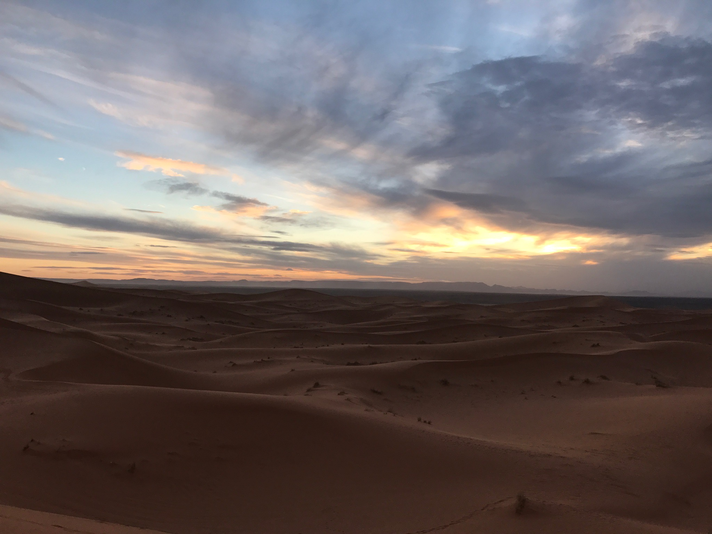
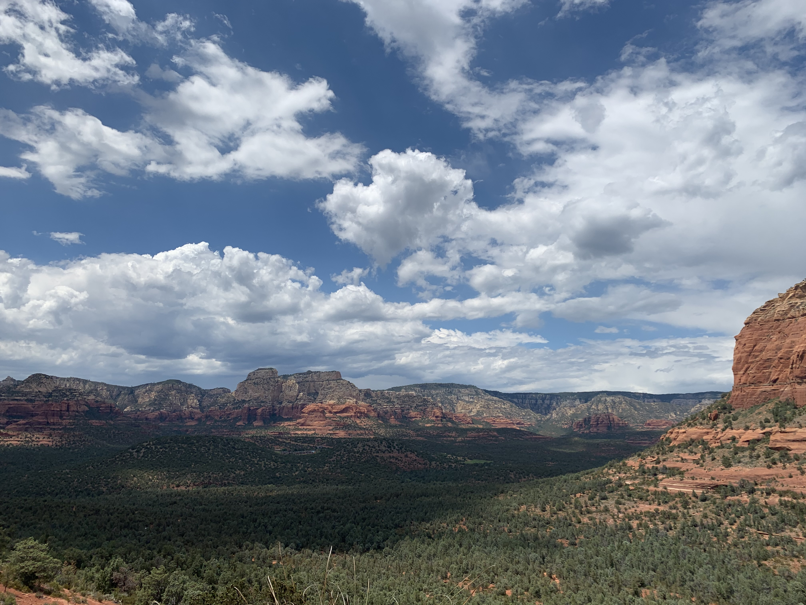

Croatia
Krka National Park, Skradinski Buk Waterfall

Krka National Park is known for it's series of 7 waterfalls and it is home to the most beautiful
water fall I have every seen. I had the privilege of visiting both Krka National Park and Plitvice
Lakes National Park when I visited Croatia in 2017. While both parks are hosts to a plethora of natural beauty,
Krka is my favorite. Krka National Park > Plitvice Lakes National Park. I remember the water roaring so loud you couldn't pay attention to anything else,
I remember the mist kissing my face, and I remember the trees offering me shade from the sun. Best of all,
I remember doubting reality. Have you ever seen soemthing so beautiful you start to think you made it up?
Morocco
Sahara Desert

Sitting at the top of a sand dune watching the sun set was one of the most humbling experiences of my life.
I sat there playing with the sand as I looked into the abyss of sand all around me. I tried to grab handfuls,
but the sand was so tiny, almost nanoscopic, so it kept sifting through my fingers. If in this universe I am a speck of dust, I questioned
if I truly existed.
Sedona, Arizona, USA
Devil's Bridge

Devil's Bridge Trail is rated "moderately difficult," but there is nothing moderate about it. There are many vantage points
throughout the trail-I know because I take many stops. My favorite vantage point is right before you reach the bridge.
I always give up at this point, but each time I'm pleasently surprised by a clear view of red rocks and tree tops. Seeing
natural beauty like the one Sedona offers always feels like God's personal gift to me.